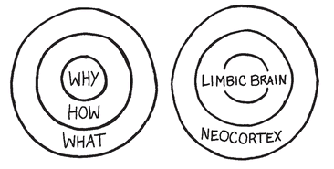

Gut Decisions Don’t Happen in Your Stomach
The principles of The Golden Circle are much more than a communications hierarchy. Its principles are deeply grounded in the evolution of human behavior. The power of WHY is not opinion, it’s biology. If you look at a cross section of the human brain, from the top down, you see that the levels of The Golden Circle correspond precisely with the three major levels of the brain.
The newest area of the brain, our Homo sapien brain, is the neocortex, which corresponds with the WHAT level. The neocortex is responsible for rational and analytical thought and language.

The middle two sections comprise the limbic brain. The limbic brain is responsible for all of our feelings, such as trust and loyalty. It is also responsible for all human behavior and all our decision-making, but it has no capacity for language.
When we communicate from the outside in, when we communicate WHAT we do first, yes, people can understand vast amounts of complicated information, like facts and features, but it does not drive behavior. But when we communicate from the inside out, we’re talking directly to the part of the brain that controls decision-making, and our language part of the brain allows us to rationalize those decisions.
The part of the brain that controls our feelings has no capacity for language. It is this disconnection that makes putting our feelings into words so hard. We have trouble, for example, explaining why we married the person we married. We struggle to put into words the real reasons why we love them, so we talk around it or rationalize it. “She’s funny, she’s smart,” we start. But there are lots of funny and smart people in the world, but we don’t love them and we don’t want to marry them. There is obviously more to falling in love than just personality and competence. Rationally, we know our explanation isn’t the real reason. It is how our loved ones make us feel, but those feelings are really hard to put into words. So when pushed, we start to talk around it. We may even say things that don’t make any rational sense. “She completes me,” we might say, for example. What does that mean and how do you look for someone who does that so you can marry them? That’s the problem with love; we only know when we’ve found it because it “just feels right.”
The same is true for other decisions. When a decision feels right, we have a hard time explaining why we did what we did. Again, the part of the brain that controls decision-making doesn’t control language, so we rationalize. This complicates the value of polls or market research. Asking people why they chose you over another may provide wonderful evidence of how they have rationalized the decision, but it does not shed much light on the true motivation for the decision. It’s not that people don’t know, it’s that they have trouble explaining why they do what they do. Decision-making and the ability to explain those decisions exist in different parts of the brain.
This is where “gut decisions” come from. They just feel right. There is no part of the stomach that controls decision-making, it all happens in the limbic brain. It’s not an accident that we use that word “feel” to explain those decisions either. The reason gut decisions feel right is because the part of the brain that controls them also controls our feelings. Whether you defer to your gut or you’re simply following your heart, no matter which part of the body you think is driving the decision, the reality is it’s all in your limbic brain.
Our limbic brain is powerful, powerful enough to drive behavior that sometimes contradicts our rational and analytical understanding of a situation. We often trust our gut even if the decision flies in the face of all the facts and figures. Richard Restak, a well-known neuroscientist, talks about this in his book The Naked Brain. When you force people to make decisions with only the rational part of their brain, they almost invariably end up “overthinking.” These rational decisions tend to take longer to make, says Restak, and can often be of lower quality. In contrast, decisions made with the limbic brain, gut decisions, tend to be faster, higher-quality decisions. This is one of the primary reasons why teachers tell students to go with their first instinct when taking a multiple-choice test, to trust their gut. The more time spent thinking about the answer, the bigger the risk that it maybe the wrong one. Our limbic brains are smart and often know the right thing to do. It is our inability to verbalize the reasons that may cause us to doubt ourselves or trust the empirical evidence when our gut tells us not to.
Consider the experience of buying a flat-screen TV at your local electronics store. You stand in the aisle listening to an expert explain to you the difference between LCD and plasma. The sales rep gives you all the rational differences and benefits, yet you are still none the wiser as to which one is best for you. After an hour, you still have no clue. Your mind is on overload because you’re overthinking the decision. You eventually make a choice and walk out of the store, still not 100 percent convinced you chose the right one. Then you go to your friend’s house and see that he bought the “other one.” He goes on and on about how much he loves his TV. Suddenly you’re jealous, even though you still don’t know that his is any better than yours. You wonder, “Did I buy the wrong one?”
Companies that fail to communicate a sense of WHY force us to make decisions with only empirical evidence. This is why those decisions take more time, feel difficult or leave us uncertain. Under these conditions manipulative strategies that exploit our desires, fears, doubts or fantasies work very well. We’re forced to make these less-than-inspiring decisions for one simple reason—companies don’t offer us anything else besides the facts and figures, features and benefits upon which to base our decisions. Companies don’t tell us WHY.
People don’t buy WHAT you do, they buy WHY you do it. A failure to communicate WHY creates nothing but stress or doubt. In contrast, many people who are drawn to buy Macintosh computers or Harley-Davidson motorcycles, for example, don’t need to talk to anyone about which brand to choose. They feel the utmost confidence in their decision and the only question they ask is which Mac or which Harley. At that level, the rational features and benefits, facts and figures absolutely matter, but not to drive the decision to give money or loyalty to the company or brand. That decision is already made. The tangible features are simply to help direct the choice of product that best fits our needs. In these cases, the decisions happened in the perfect inside-out order. Those decisions started with WHY—the emotional component of the decision—and then the rational components allowed the buyer to verbalize or rationalize the reasons for their decision.
This is what we mean when we talk about winning hearts and minds. The heart represents the limbic, feeling part of the brain, and the mind is the rational, language center. Most companies are quite adept at winning minds; all that requires is a comparison of all the features and benefits. Winning hearts, however, takes more work. Given the evidence of the natural order of decision-making, I can’t help but wonder if the order of the expression “hearts and minds” is a coincidence. Why does no one set out to win “minds and hearts”?
The ability to win hearts before minds is not easy. It’s a delicate balance of art and science—another coincidental grammatical construction. Why is it that things are not a balance of science and art, but always art before science? Perhaps it is a subtle clue our language-impaired limbic brain is sending us to help us see that the art of leading is about following your heart. Perhaps our brains are trying to tell us that WHY must come first.
Absent a WHY, a decision is harder to make. And when in doubt we look to science, to data, to guide decisions. Companies will tell you that the reason they start with WHAT they do or HOW they do it is because that’s what their customers asked for. Quality. Service. Price. Features. That’s what the data reported. But for the fact that the part of the brain that controls decision-making is different from the part of the brain that is able to report back that decision, it would be a perfectly valid conclusion to give people what they ask for. Unfortunately, there is more evidence that sales don’t significantly increase and bonds of loyalty are not formed simply when companies say or do everything their customers want. Henry Ford summed it up best. “If I had asked people what they wanted,” he said, “they would have said a faster horse.”
This is the genius of great leadership. Great leaders and great organizations are good at seeing what most of us can’t see. They are good at giving us things we would never think of asking for. When the computer revolution was afoot, computer users couldn’t ask for a graphical user interface. But that’s what Apple gave us. In the face of expanding competition in the airline industry, most air travelers would never have thought to ask for less instead of more. But that’s what Southwest did. And in the face of hard times and overwhelming odds, few would have asked their country, what can I do for you over what can you do for me? The very cause upon which John F. Kennedy introduced his presidency. Great leaders are those who trust their gut. They are those who understand the art before the science. They win hearts before minds. They are the ones who start with WHY.
We make decisions all day long, and many of them are emotionally driven. Rarely do we sift through all the available information to ensure we know every fact. And we don’t need to. It is all about degrees of certainty. “I can make a decision with 30 percent of the information,” said former secretary of state Colin Powell. “Anything more than 80 percent is too much.” There is always a level at which we trust ourselves or those around us to guide us, and don’t always feel we need all the facts and figures. And sometimes we just may not trust ourselves to make a certain decision yet. This may explain why we feel (there’s that word again) so uncomfortable when others twist our arm to make a decision that doesn’t sit well in our gut. We trust our gut to help us decide whom to vote for or which shampoo to buy. Because our biology complicates our ability to verbalize the real reasons why we make the decisions we do, we rationalize based on more tangible factors, like the design or the service or the brand. This is the basis for the false assumption that price or features matter more than they do. Those things matter, they provide us the tangible things we can point to to rationalize our decision-making, but they don’t set the course and they don’t inspire behavior.